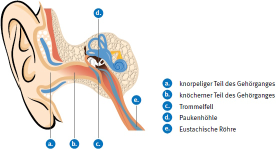

Zum besseren Verständnis ist nachstehend die Anatomie des Ohres beschrieben: Das Außenohr umfasst die Ohrmuschel mit der Ohrmulde vor dem Gehörgang und den Gehörgang selbst. Der Gehörgang ist etwa 3,5 cm lang, besteht aus einem knorpeligen und knöchernen Teil (vgl. Abbildung 16) und reicht bis zum Trommelfell. Der knorpelige Teil enthält Haare, die das korrekte Einsetzen von Gehörschutzstöpseln erschweren können. Beim Einsetzen von Gehörschutzstöpseln kann Ohrenschmalz (Cerumen) und daran gebundener Staub in den knöchernen Teil des äußeren Gehörgangs geschoben werden. Von hier kann er nur noch durch medizinisches Personal entfernt werden. Eigene Reinigungsversuche von außen sind mit nicht unerheblichen Risiken einer Trommelfellverletzung verbunden.
Die Weite des Gehörganges ist individuell sehr unterschiedlich. Es gibt Personen mit großen Gehörgangsdurchmessern von 14 mm. Die meisten Gehörgangsdurchmesser liegen im Bereich von 7 bis 11 mm. Nur wenige Menschen haben einen runden Gehörgang. Meist ist der Querschnitt leicht ellipsenförmig. Bei manchen Menschen sind die Gehörgangsquerschnitte linsenförmig flach.
Das Mittelohr umfasst das Trommelfell, die Paukenhöhle und die Gehörknöchelchenkette. Das Mittelohr ist über die Eustachische Röhre mit dem Mund- und Rachenraum verbunden. Über diese Verbindung stellt sich im Mittelohr, z. B. beim Schlucken, der äußere Luftdruck ein.
Wird im knöchernen Teil des Gehörgangs beim Einsetzen des Gehörschutzstöpsels ein Überdruck erzeugt oder stellt sich dort durch Kaubewegungen ein Unterdruck ein, führt dies zu unangenehmen Verspannungen des Trommelfells.

Abb. 16 Äußeres Ohr und Mittelohr